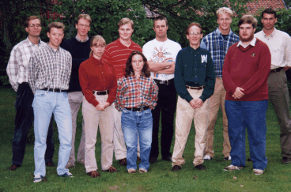

Vad gör MaFU?
Mafu har till uppgift att marknadsföra D-sektionen mot företag och gymnasier. Uppgifterna kan bestå i att anordna företagskvällar, åka runt och berätta om D och IT-linjen samt att ta fram nytt presentationsmaterial.
Orföranden planerar och samordnar MaFUs arbete, samt planerar de olika sektionernas gemensamma frågor.
Kontakta MaFU
Har du ideer eller funderingar på saker som gör att vi kan marknadsföra
D-sektionen bättre, eller kanske frågor om kommande arrangemang ?
Hör av dig till: D-MaFU
Vad har MaFU gjort tidigare år?
Mötesprotokoll från MaFU 95/96.

Mafu 96/97.
Ordförande
Joacim Forssell, tel 178866
Sponsoransvarig (ständigt adjungerad)
Marta Pilawa, tel 260791
Ledamöter
Magnus Björendahl, tel 175956
Einar Brandt, tel 179413
Henrik Ekstam, tel 175246
Johan Fredholm, tel 261069
Johan Gelin, tel 178626
David Glans, tel 175978
Hanna Mårtensson, tel 171677
Martin Niklasson, tel 260750
Anders Peterson, tel 261557
Företagsvärd - ABB
Jimmy Jonsson, tel 174381